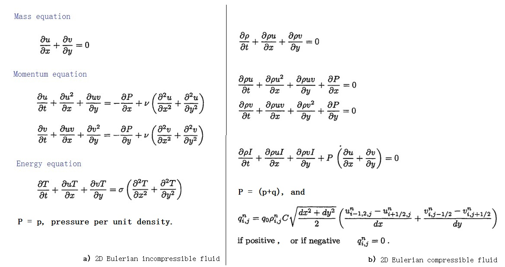
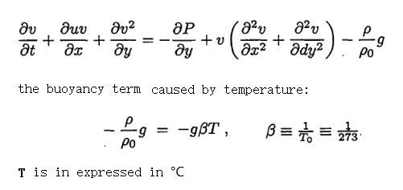
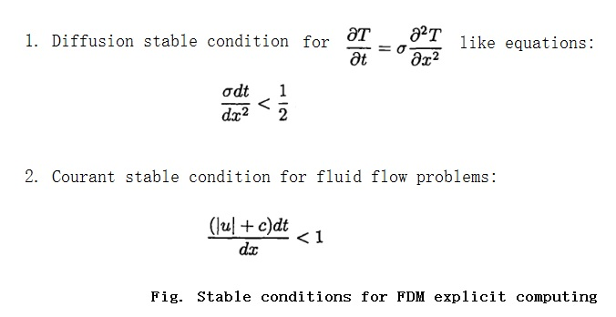

These notes are based on the book Introduction to Finite-Difference for Numerical Fluid Dynamics written by Evan Scannapieco & Francis H. Harlow.

It is worth mentioning that a buoyancy term can by added to the momentum equations, take the incompressible flow for example:

the buoyancy is caused by a small changes in density, and this term can be solved explicitly.
There are two stable conditions must to be satisfied for an explicit FDM procedure:

To solve the momentum equations of a 2D incompressible fluid flow, a method that combines both explicit and implicit techniques is preferred, because of a stability condition that is present in the pressure term in the momentum equation.
For an ADIABATIC system, the sound speed can be expressed as
c^2 = dp/dρ
for an incompressible flow, ρ is constant thus dρ→∞, but p is not constant, which leads c^2→∞. The Courant condition states that
(|u|+c)dt/dx < 1
indicating that the system will be unstable if pressures are computed explicitly.
While the pressure contributions to momentum equations must be computed implicitly, then, the rest of the terms can be computed faster using an explicit method.
For compressible flow, as the sound speed is not infinite, explicit method can be used for pressure term, with Courant condition and Diffusion condition satisfied conditionally.
In the momentum equations, the advective terms can be calculated using either a donor-cell or cell-centered technique.
A cell-centered approach is allowable because the viscous terms prevents numerical instability, this approach results in a code that is able to resolve delicate physical phenomena that occur at low viscosity, such as the KARMAN VORTEX STREET.
Use of the donor-cell technique results in a code that is able to handle more violent phenomena, such as the rushing of fluid over a stationary block. It allows for systems at higher velocities and with more change in velocities to be simulated without becoming numerical unstable, but loses much of the precision of the cell-centered technique.
Aaron Tang